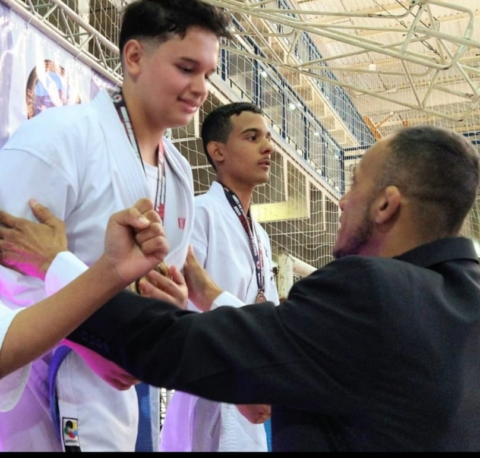

Página Inicial
História do Subway Surfers
Site do criador
Campeão Paulista de Karatê Kyokushinkaykan

Vice-Campeão de Grand Prix KWU (Campeonato nivel sul-americano)
Corinthians é meu nome do meio
Aluno do ShiHan Luciano basile.
O primeiro Brasileiro a ser Bi Campeão mundial de Karatê.
33 anos, inspirando e ensinando a Arte Marcial do Karatê.
Faixa Preta 5 dan.